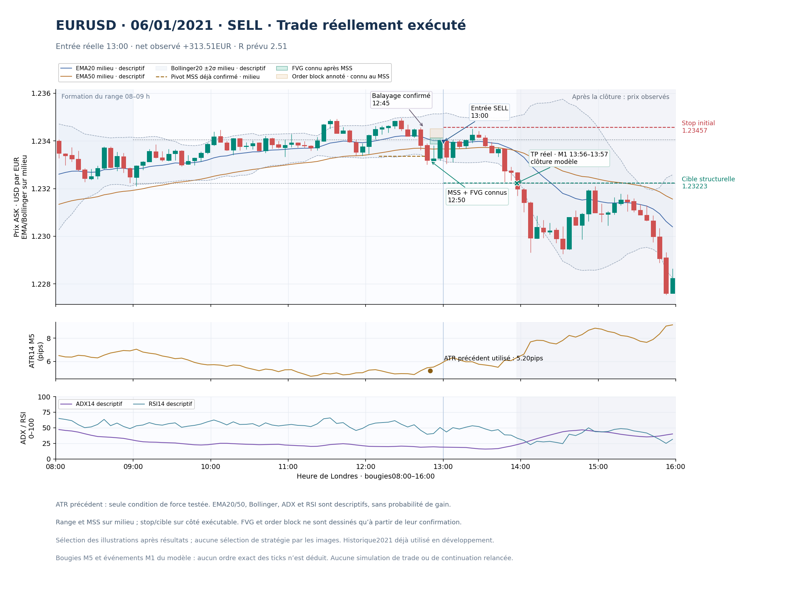
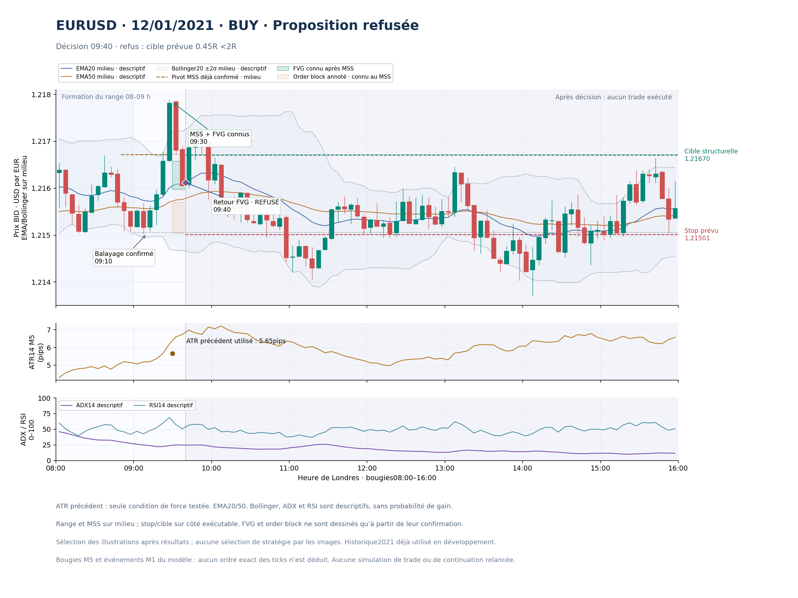
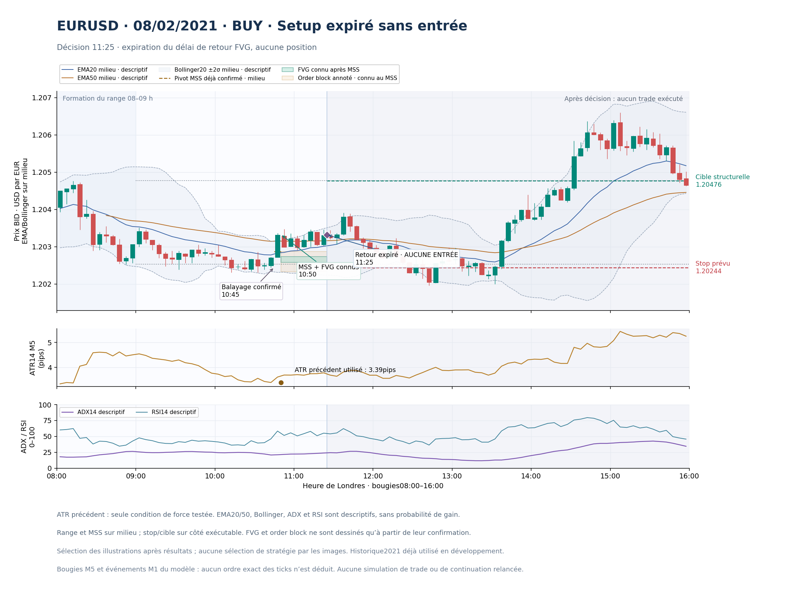

Trade réellement exécuté · 2021-01-06

Illustrations après résultats, données2021 de développement. Un seul trade ne démontre aucune probabilité de gain. Seul l’ATR précédent filtre la force du MSS ; les autres indicateurs sont descriptifs. Aucun trade supplémentaire n’est simulé.


